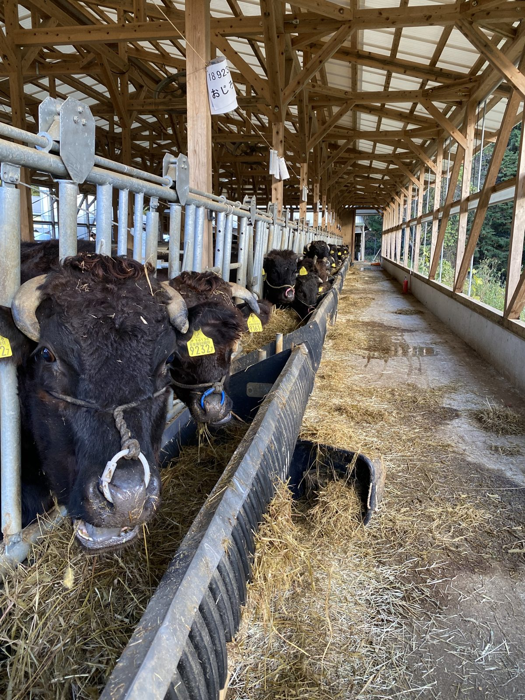
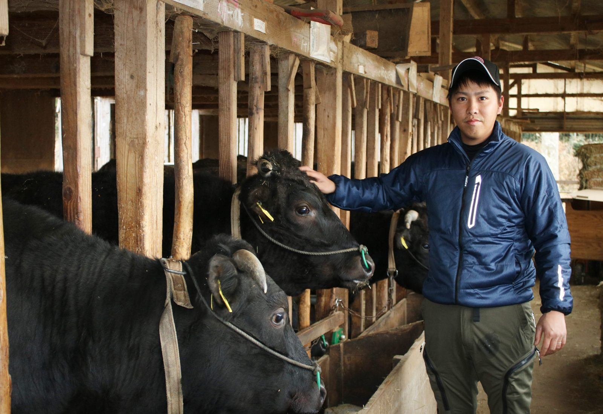
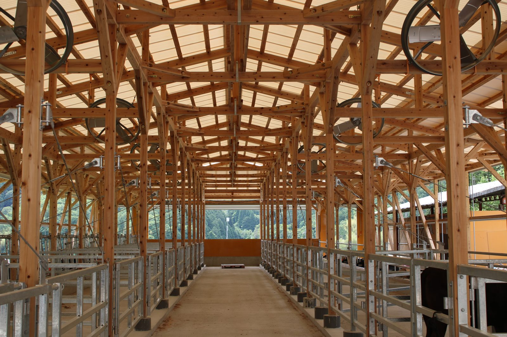
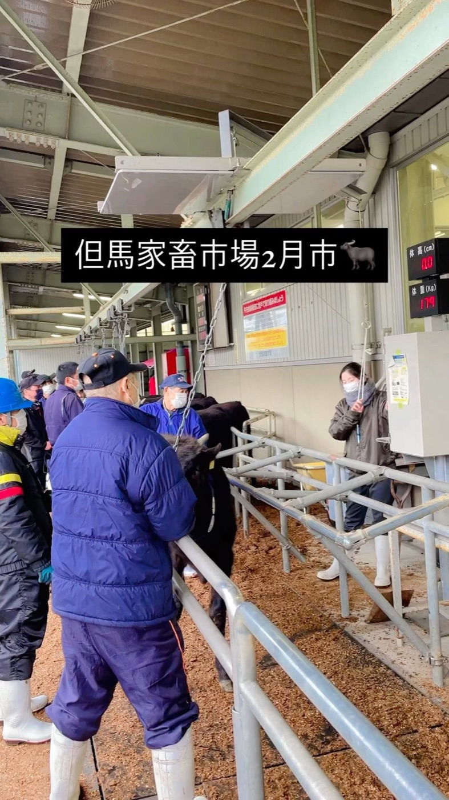

私たちは母牛65頭の但馬牛の繁殖農家です。生まれた子牛を約9か月育て、毎月の但馬家畜市場のセリへ送り出しています。
子牛は早く乳離れさせず、できるだけ母牛の乳で育てます。最初にしっかり免疫をつけることが、病気に強い牛への近道です。
初めてお産をする母牛は、個室でゆったりと。落ち着いてお産に臨めるようにしています。
一頭ずつ、数字で見る。お産、種付け、セリの価格まで、全頭の記録をつけています。どの母牛の子が、市場でどれだけ評価されたか。その結果をもとに、次の種付けと母牛の入れ替えを決めています。
株式会社丹波農商 代表取締役 大塩 敦史
| 年度（10月〜翌9月） | 頭数 | 市場平均＝100 | 評価 |
|---|---|---|---|
| 2020年10月〜2021年9月 | 8頭 | 104.8 | 上回る |
| 2021年10月〜2022年9月 | 17頭 | 102.6 | 上回る |
| 2022年10月〜2023年9月 | 24頭 | 108.0 | 上回る |
| 2023年10月〜2024年9月 | 27頭 | 101.6 | 上回る |
| 2024年10月〜2025年9月 | 38頭 | 101.4 | 上回る |
| 2025年10月〜2026年9月 | 43頭 | 101.0 | 上回る |
市場で売り始めてから6年間、毎年、同じ日のセリに出た同じ性別の子牛の平均を上回る評価をいただいています。
※ 2021年1月〜2026年9月の但馬家畜市場の販売実績（自社の牛の管理記録より）。「市場平均＝100」は、同じ日のセリに出た同じ性別の子牛の平均価格を100としたときの、私たちの子牛の価格の割合（年度ごとの合計で計算）。母牛の頭数は2026年10月時点。

初めてお産をする母牛は、つなぎ牛舎ではなく個室で。気持ちを落ち着けて、安心してお産に臨めるようにしています。

分娩監視システムとカメラで、夜中のお産も見逃しません。お産のあとは早めに次の種付けにつなげます。
風が抜け、光が入る牛舎。寝床にはもみ殻と稲わらを敷き、
使い終わったら堆肥になって田畑へ還ります。



地域の耕作放棄地を一枚ずつ開いて、牛のための牧草地にしています。
輸入のエサにたよらず、丹波の草で牛を育てる。牛のふんは堆肥にして田畑へ還し、その田んぼのもみ殻と稲わらが、また牛の寝床になる。私たちの牛は、この循環の真ん中にいます。
私たちの循環型農業について
生まれた子牛は、生後およそ9か月まで私たちの牛舎で育て、但馬家畜市場のセリへ。そこから肥育農家さんのもとで大きくなり、やがて「但馬牛」「神戸ビーフ」として食卓に届きます。
毎月のセリに送り出す子牛は、Instagramでも一頭ずつ紹介しています。2025年10月からの1年間は43頭を送り出しました。